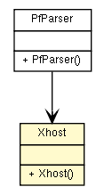

fr.univrennes1.cri.jtacl.equipments.openbsd
Class Xhost

java.lang.Object
 fr.univrennes1.cri.jtacl.equipments.openbsd.Xhost
fr.univrennes1.cri.jtacl.equipments.openbsd.Xhost
public class Xhost
- extends java.lang.Object
Host specification
- Author:
- Patrick Lamaiziere
|
Constructor Summary |
Xhost()
|
| Methods inherited from class java.lang.Object |
clone, equals, finalize, getClass, hashCode, notify, notifyAll, toString, wait, wait, wait |
Xhost
public Xhost()
getDynaddr
public java.lang.String getDynaddr()
setDynaddr
public void setDynaddr(java.lang.String dynaddr)
getDynaddrMask
public java.lang.String getDynaddrMask()
setDynaddrMask
public void setDynaddrMask(java.lang.String dynaddrMask)
getIfName
public java.lang.String getIfName()
setIfName
public void setIfName(java.lang.String ifName)
getFirstAddress
public java.lang.String getFirstAddress()
setFirstAddress
public void setFirstAddress(java.lang.String firstAddress)
getLastAddress
public java.lang.String getLastAddress()
setLastAddress
public void setLastAddress(java.lang.String lastAddress)
isNoroute
public boolean isNoroute()
setNoroute
public void setNoroute(boolean noroute)
isNot
public boolean isNot()
setNot
public void setNot(boolean not)
getRoute
public java.lang.String getRoute()
setRoute
public void setRoute(java.lang.String route)
isUrpffailed
public boolean isUrpffailed()
setUrpffailed
public void setUrpffailed(boolean urpffailed)
isAny
public boolean isAny()
setAny
public void setAny(boolean any)
getTable
public java.lang.String getTable()
setTable
public void setTable(java.lang.String table)
Copyright © 2010. All Rights Reserved.